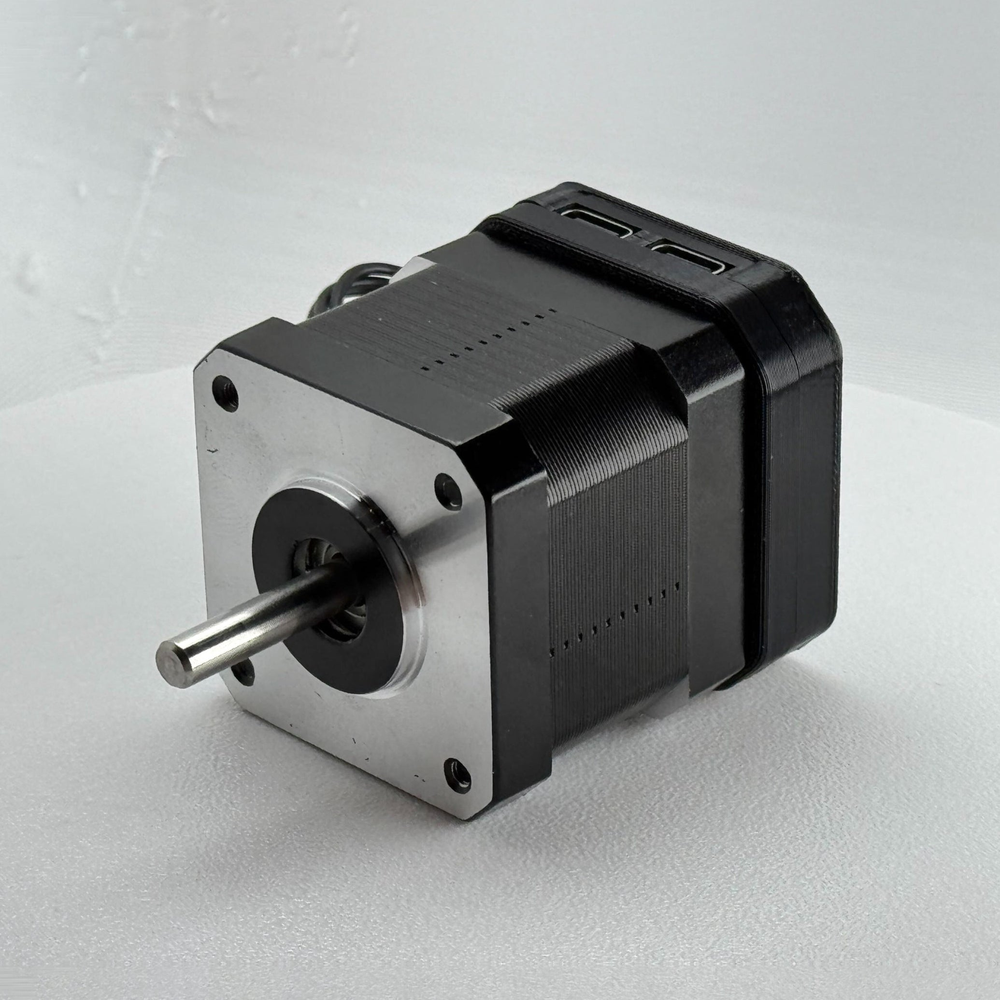
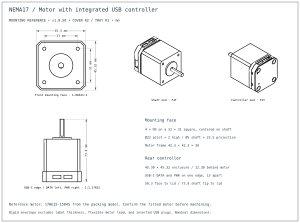

tscircuitPRODUCT DATASHEET · REV A
NEMA17 Motor with
Integrated USB Controller
A two-phase stepper motor with a rear-mounted USB motion controller, separate USB-C Power Delivery input and a front mounting face for direct installation.

Connect the two ports
DATA connects the controller to a computer. PWR connects the motor driver to a USB-PD supply.
The browser dashboard selects direction, speed, step count and supply profile, and displays board temperature and motion state.
Assembly at a glance
| Item | Specification |
|---|
| Controller | RP2040 with DRV8825 stepper driver. PCB design v1.0.58. |
| Enclosure | Flat-top cover R2 and spacer tray R1. Rigid footprint 45.30 × 45.32 mm. |
| Mounting | Four M3 front holes on a centered 31 × 31 mm pattern. See page 3 for shaft and pilot dimensions. |
| Motion interface | USB CDC serial, 115200 baud. Use the dashboard or send newline-delimited JSON from a host application. |
Mechanical reference motor: StepperOnline 17HE15-1504S, as used in the packaging design. Motor-specific figures in this sheet apply to that reference. Confirm the fitted motor for tolerance-critical work.
tscircuitMECHANICAL INTERFACE
Mounting the complete assembly

Reference dimensions
| Feature | Design value, mm |
|---|
| Motor face and holes | 42.3 × 42.3 max. Four M3 tapped holes, 4.0 min thread depth on the reference motor. Pitch 31 ±0.2 on both axes. |
| Pilot and shaft | Ø22 pilot, 2 ±0.25 high. Ø5 shaft, projecting 23.5 ±0.5 from mounting face. Shaft flat length 20 ±0.2. |
| Rigid stack | 38 motor body + 12.30 rear enclosure = 50.30 face to lid. With shaft, 73.80 nominal overall. |
| Rear connections | With the lid facing you and USB at top, DATA is 6 left of center and PWR is 7 right. Both centers sit 6.63 above the motor rear face. |
Check screw engagement and external cable clearance on the fitted unit.
tscircuitUSB SERIAL PROTOCOLCommand reference
Protocol 3 uses one JSON object per line. Use a numeric request id to correlate acknowledgements. Read status on connection and check capabilities before enabling optional controls.
| Command | Fields and behavior |
|---|
status | Returns telemetry and an acknowledgement. Check board ID, driver, capabilities, temperature and power state. |
heartbeat | Renew the motion lease at intervals well below 1.5 s throughout motion and holding. No acknowledgement. |
set_pd_voltage | voltage in V. Stop and release coils first, then wait for motor_power_ready. |
start | mode = steps or continuous, resolution, direction = 1 or −1, speed_sps, and steps for a finite move. Counts and speeds use the selected step resolution. |
jog | Start or update a continuous move with direction, resolution, speed and acceleration where advertised. |
decelerate | Ramp down a continuous jog. With supported firmware, hold_position: true retains coil excitation after braking. |
stop | Stop stepping and release coil power, including an idle hold. |
set_threshold | threshold_c sets the persistent temperature alarm while stopped. Valid range 10–74 °C. |
beep / set_led | Test the buzzer for 600 ms, or select an advertised LED color. Fault indications take priority. |
set_device_name | name saves the USB name while stopped. Reconnect after the controller restarts. |
Example · 20 full steps
Once power is ready and a separate heartbeat loop is running, send the following line. At 1.8° per step, the commanded travel is 36° on the reference motor.
{"id":4,"cmd":"start","mode":"steps","resolution":"full","direction":1,"speed_sps":40,"steps":20}
Send the example as one line. An acknowledgement contains type: "ack", the request ID and ok. Read error when a command is rejected. See the linked protocol for advanced commands and telemetry.
tscircuitOPERATING DATA & REFERENCESMotion and operating limits
| Property | Value or behavior |
|---|
| Reference motor | 17HE15-1504S, bipolar, 1.8° per full step (200/revolution). Motor ratings: 1.50 A/phase, 2.30 Ω/phase, 4.0 mH/phase and 0.42 N·m holding torque under the manufacturer's conditions. |
| Command resolution | Full, half, quarter, eighth or sixteenth. The DRV8825 profile groups fixed 1/16-step pulses. A finer command increment does not guarantee the same positioning accuracy. |
| Thermal behavior | Starting requires valid board temperature below 60 °C. Shutdown occurs at 75 °C. The configurable buzzer alarm and the shutdown threshold serve different purposes. |
| Loss of control | A missed heartbeat, invalid temperature, driver fault or thermal trip releases the coils. Re-establish healthy conditions and explicitly command a new move. |
| Application limits | The sources provide no assembled-unit continuous torque, loaded speed curve, duty cycle or ambient-temperature rating. Size the mechanism using load tests with the chosen supply, cooling and enclosure. |
Downloads and source documents
Rev A · 27 November 2026. Board v1.0.58, flat-top enclosure R2 and tray R1. The physical product photo shows the thermal-label version. The drawing exposes the underlying lid geometry.